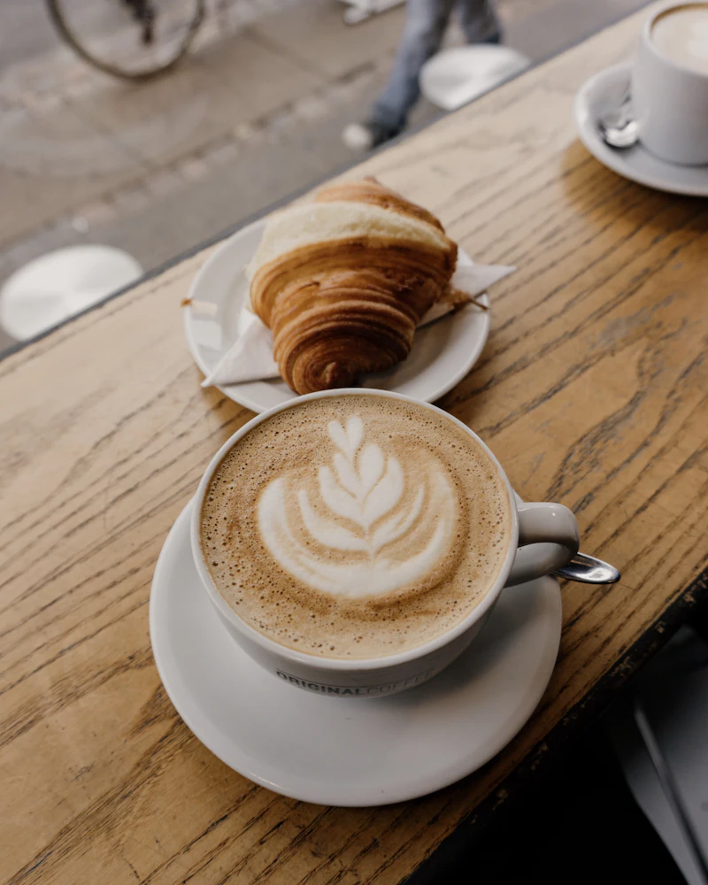
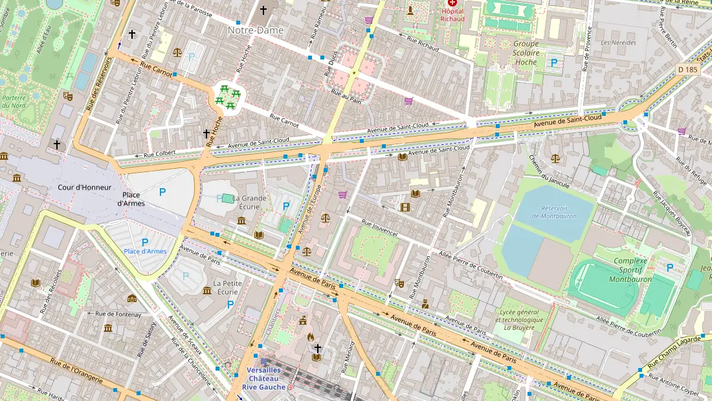

Coffee Go Versailles
Coffee, tea, cake and juice on rue Georges Clemenceau, Versailles.

- Every day. Weekdays from 9:15am, weekends from 10am
- 4 rue Georges Clemenceau, 78000 Versailles
- Terrace seats and takeaway


Hours and address
| Monday | 9:15am to 6:30pm |
|---|---|
| Tuesday | 9:15am to 6:30pm |
| Wednesday | 9:15am to 6:30pm |
| Thursday | 9:15am to 6:30pm |
| Friday | 9:15am to 6:30pm |
| Saturday | 10am to 7:30pm |
| Sunday | 10am to 6:30pm |

© OpenStreetMapOpen in OpenStreetMap4 rue Georges Clemenceau78000 Versailles